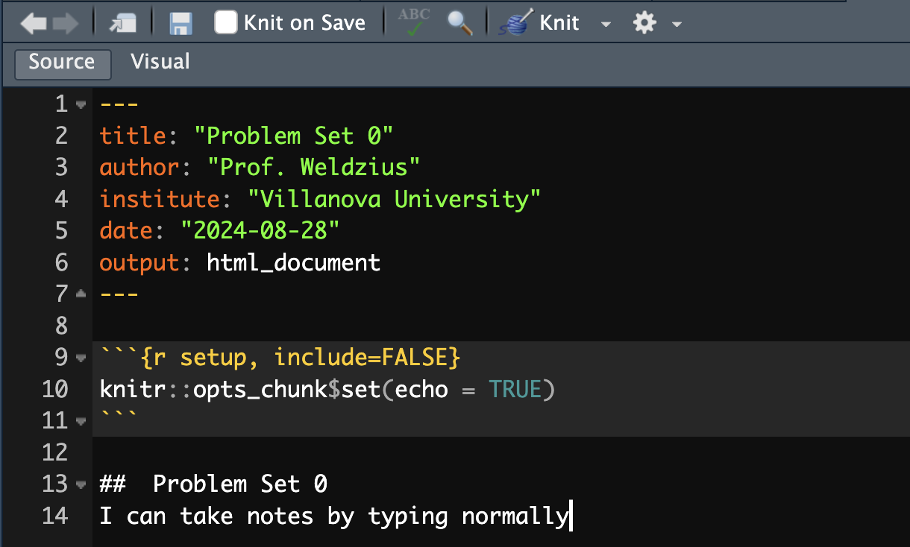
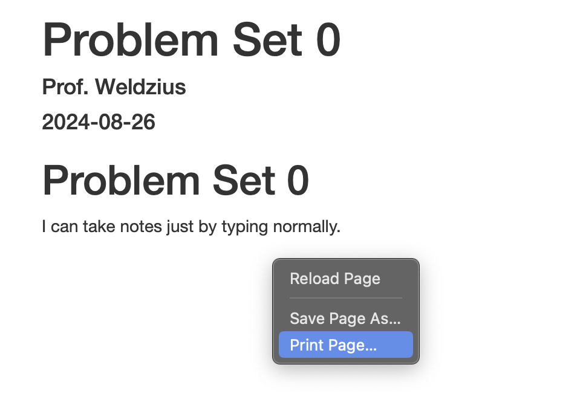

At the top of all problem sets I will have the following statement. You should follow the statement with the names of classmates with whom you worked and/or upload a PDF of your AI prompt/output.
If you collaborated with a colleague and/or used AI for any help on this problem set, document here. Write the names of your classmates and/or upload a PDF of your AI prompt and output with your problem set:
Problem Set 0: Getting Set Up!
The rest of the semester will see you working on data science questions using R. As such, your first problem set will have you:
- Install
R on your computer.
- Install
RStudio on your computer.
- Create a
directory (i.e., a folder with a set of subfolders) for this class.
- Create a new
.Rmd file and Save as....
- Modify the
.Rmd file and knit it.
1. Installing R
R is going to be the only programming language we will use. R is an extensible statistical programming environment that can handle all of the main tasks that we’ll need to cover this semester: getting data, analyzing data and communicating data analysis.
Download R here: https://cran.r-project.org/. Make sure to choose the version that works with your operating system!

2. Installing RStudio
When we work with R, we communicate via the command line. To help automate this process, we can write scripts, which contain all of the commands to be executed. These scripts generate various kinds of output, like numbers on the screen, graphics or reports in common formats (pdf, word). Most programming languages have several I ntegrated D evelopment E nvironments (IDEs) that encompass all of these elements (scripts, command line interface, output). The primary IDE for R is RStudio.
Download RStudio here: https://rstudio.com/products/rstudio/download/. You need the free RStudio desktop version.

3. Setting up Directories
In each class, we’re going to include some code and text in one file, and data in another file. You’ll need
to download both of these files to your computer. You need to have a particular place to put these files. Computers are organized using named directories (sometimes called folders). Don’t just put the files in your Downloads directory. One common solution is to created a folder on your computer named after the class: PSC4175.
You could just throw everything related to the class into this folder. However, this will quickly get messy. I recommend you create a “sub-folder” (or “sub-directory”) within PSC4175 called Lecture_1. (You might also want to create similar sub-folders for Lecture_2.) Inside Lecture_1, create two additional sub-folders: code and data. When you’re done, your class directory should look like this:
4. Create an .Rmd file
Open RStudio, then create a new .Rmd file. To do this, click on File → New File → R Markdown....

Settings for .Rmd file
You will then be asked to determine a bunch of settings for this .Rmd document. For example, you can choose whether you want to create a “Document”, “Presentation”, “Shiny”, or “From Template” on the left. You can set the “Title:” “Author:” and “Date:” on the top-right. And you can choose the “Default Output Format:” to be either “HTML”, “PDF”, or “Word”. You should not change any of these settings. Their defaults (“Document”, “Untitled”, “[Your name]”, “[Today’s Date]”, and “HTML”) are sufficient. Just click “OK”.

Saving .Rmd file
This will open a new .Rmd file! Now you should change the title of the file to “Problem Set 0” and the author to your name. You should then save the file in your code folder with the file name [Last Name]_PS0.Rmd by clicking File → Save As....

5. Modify and knit
Now, delete all of the default text in your .Rmd file from line 12 down to the bottom. Then write the following on line 12:
# Problem Set 0
I can take notes by just typing normally.
Now let’s knit the file by clicking the Knit button on the top of the window. You should see a new window pop-up that shows the processed code! This .html document should also appear in your code folder with the same file name as your .Rmd file.

Inserting R Code
The final part of the homework assignment is to insert a chunk of R code. On line 15 type the following:
```{r}
2+2
```
Then knit a final time and open the .html file that is created in your code folder. It should be called [Your Last Name]_PS0.html. You should open this in your internet browser (Safari, Google Chrome, FireFox, etc.), and then right-click anywhere on the opened file and click “Print…”.

Then choose “Save as PDF…”

and save it as [Your Last Name]_ps0.pdf.

Finally, upload the PDF to Blackboard under the Problem Set 0 assignment!